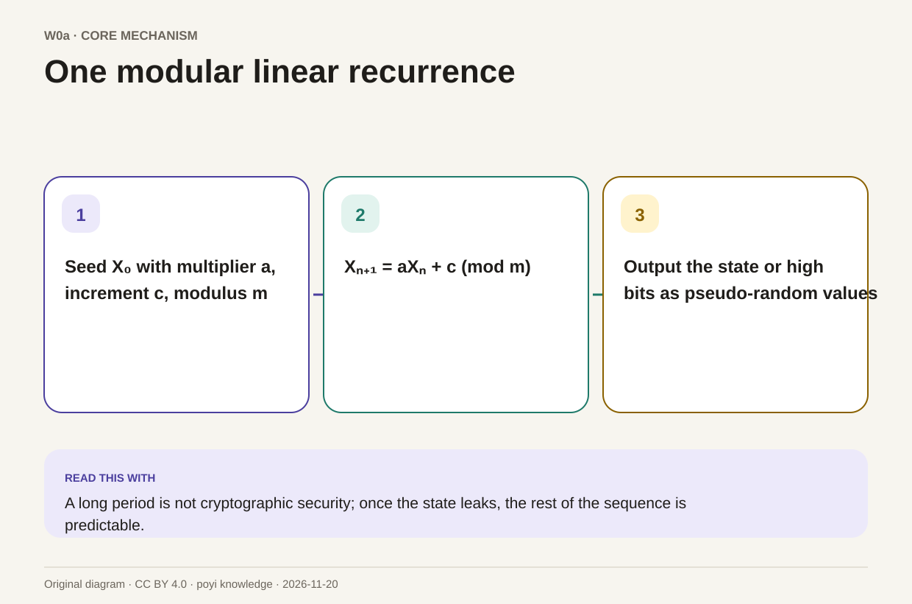
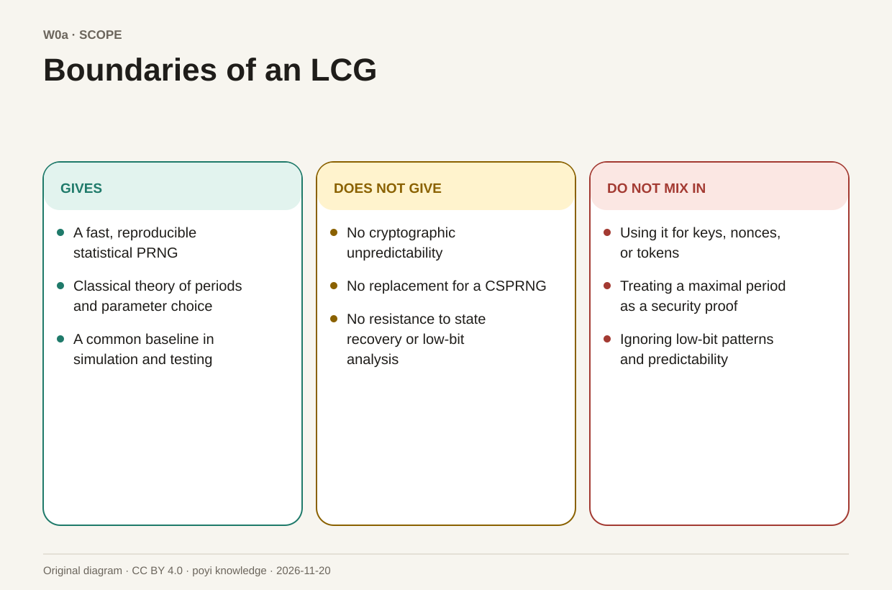

Principles
Algorithm: Linear Congruential Generator (线性同余发生器). The Linear Congruential Generator (LCG) is the most important and most misused algorithm in the history of cryptography. It is one line of formula:
X(n+1) = (a · X(n) + c) mod m
Four things: modulus m, multiplier a, increment c, seed X(0). The output is the state itself (or some bits of it). That is the whole thing. It became the default answer for half a century because of three virtues: it is fast (one multiply-add and one modulo), it is portable (three lines in any language), and its period can be made as long as the modulus. The Hull–Dobell theorem gives the necessary and sufficient conditions for the period to reach its maximum of m:
cis coprime tom;a − 1is divisible by every prime factor ofm;- if 4 divides
m, thena − 1must also be divisible by 4. Satisfy those three and the sequence visits every value in0 … m−1exactly once before repeating. The classic ANSI C parametersa = 1103515245, c = 12345, m = 2^31do; POSIX'srand48family usesa = 0x5DEECE66D, c = 0xB, m = 2^48, and Java'sjava.util.Randomuses that same pair. But this has to be said immediately: an LCG is not cryptographically secure, and it is not "a little weak" — it is a different category of thing.
Its output sequence is a deterministic linear trajectory. Given enough output, an attacker can recover the internal state with pure algebra, or even lattice reduction. RFC 1750's verdict in 1994 was blunt: "linear congruent generators have been broken," and there are techniques for breaking all polynomial congruent generators — "even if only one bit of the pseudo-random values is released, the seed can be determined from short sequences."
There is one conclusion, with no exceptions:
An LCG must never be used for key generation.
Not for symmetric keys, IVs, nonces, salts, session tokens, password-reset tokens, or anything else where predictability is fatal. A key generated this way is equivalent to a published key. That is not a "it could be better" warning. It is a statement that the key is already public.

Why it matters
The LCG is not a cryptographic algorithm, but it is a remarkable engineering artefact. Understanding why it succeeded — and why it cannot be used in cryptography — is the fastest route to understanding what "secure" actually means in modern crypto.
- It is extremely fast. A modern CPU does one LCG step in a few nanoseconds, an order of magnitude faster than a hash. For Monte Carlo simulation, load-balancing jitter, or noise in a graphics shader, nothing is more economical.
- The state is tiny. One 32-bit or 64-bit integer — it fits in a register, and in a cache line if you want lock-free access. - Its statistical behaviour is analysable. Period, correlation, lattice structure all have clean theoretical descriptions. In simulation this is a virtue; in cryptography it is the death sentence — because "analysable" means "predictable".
- It is a straight line. No branches, no tables, no edge cases. It is one of the easiest algorithms in all of cryptography to audit — which is precisely why it is the textbook target.
Why it fails in cryptography is the mirror image of why it succeeds in simulation.
Mathematically, an LCG's output sequence is a lattice. That means adjacent outputs obey linear relations that can be written down. For an attacker:
- Full-state output → one sample is enough.
- Truncated high-bit output (Java's
nextInt()gives 32 bits from a 48-bit state) → two outputs plus a 2^16 brute force restores the entire generator. - Low-bit output → the low bits have a tiny period (the lowest bit's period is 2), so they are effectively a counter.
In other words: an LCG is not "weak", it is "transparent".
Why is it still alive? Because in statistical simulation, transparency is irrelevant. Researchers want speed, a long enough period and a flat enough distribution — not unpredictability. So the LCG rules the roost in numerical analysis and a forbidden zone in cryptography. Keeping those two worlds apart is a mark of a mature engineer.
Applications
- C's
rand()/srand(): the interface dates from C89; POSIX addedrandom()/srandom(). glibc'srandom()defaults to a 128-byte-state trinomial additive-feedback generator (TYPE_3) producing 31-bit output, whilerand_r()uses the plain LCG (next = next*1103515245 + 12345, returningnext/65536 % 32768). -rand48/drand48/erand48: the POSIX 48-bit LCG withm = 2^48. The most entropy any standard library offers here — and still nowhere near enough for anything cryptographic. - Java'sjava.util.Random:a = 0x5DEECE66D, c = 0xB, m = 2^48, returning the top 32 bits of the state each time. Java'sSecureRandomis a completely different animal (by default it goes through the OSNativePRNG, reading/dev/urandomon Linux) — yet plenty of Java code wrongly usesjava.util.Randomto produce keys and nonces. - Microsoft Visual C++'s
rand(): a 32-bit LCG whose return value is only 15 bits (0–32767) — a range that says everything about what it may be used for. - Hash table hashing: multiply-shift hashing is a direct descendant of the LCG —
h = (a·k) >> (64−b), taking the high bits of a multiply. Java'sHashMap, Go's maps and most language runtimes use this trick. No unpredictability is needed here, only avalanche. - Simulation and Monte Carlo: physical modelling, queueing theory, financial risk models, molecular dynamics. - Games and graphics: dithering, particle effects, procedural generation, sampling. - Timing and scheduling jitter: pseudo-random jitter layered on fixed intervals to break up synchronised herds. - GPU shaders: the noise function in almost every graphics textbook is an LCG. - As the engine inside a better generator: PCG is an LCG plus an output permutation — the fast state advance of the LCG combined with the good statistics of a scrambler. That is the modern, correct way for the LCG family to be used.
Limits & attacks
An LCG was never "broken". It has always been transparent. Every item on this list is common knowledge, and every year somebody re-learns it the hard way.
- The low bits have absurdly short periods. For
m = 2^n, the k-th low bit has period at most 2^(k+1). The lowest bit's period is 2 — it just alternates. Any code still consuming the low bits is, in effect, outputting a counter. - Powers of two are the LCG's natural enemy: with
m = 2^nthe output sequence has a particularly ugly lattice structure, and hyperplanes are visible in higher dimensions. Knuth's spectral test exists precisely to measure this, and an LCG with badly chosen parameters shows up immediately under it. Prime moduli such as2^31−1, or a carefully chosen 64-bit multiplier, soften the visible structure but cannot remove the underlying linearity. - State recovery attacks:
- Output equals state → one output suffices.
- Truncated output → it becomes a Hidden Number Problem, solved with lattice reduction (LLL). Frieze, Kannan and Kuperberg gave the systematic algorithm in 1994. - Java's
java.util.Random: twonextInt()outputs plus a 2^16 brute force clone the whole generator, after which every future value is known. - The seed space is minuscule:srand()typically takes 32 bits. An attacker enumerates 2^32 seeds, replays each one and compares against the known output. No mathematics required — pure brute force. - Streams are correlated: two LCG sequences with the sameaandcbut different seeds are linearly related. Seeding with the current time and with the current time plus one gives you two sequences that are structurally almost the same. Seeding from the clock leaks a whole class of instances at once.
- Modulo bias:
rand() % nis not uniform. WithRAND_MAX = 2^31−1andn = 3, the first few residues come up one extra time. This is an independent classic bug, but it tends to appear in the same line of code. - It fails statistical test suites: LCGs do not pass L'Ecuyer's TestU01. Note the direction of that statement — "fails" is evidence of a problem, not proof of unusability; for simulation it may still be fine. - Using it as a cryptographic generator: the one genuine catastrophe. An LCG-generated key is no encryption at all. The real-world failures are endless: the 2013 AndroidSecureRandomincident was fundamentally about PRNG predictability being used to recover an ECDSA private key; and every tutorial that says "here is how to generate a key with a random number generator" is still running in production somewhere. RFC 1750 said it in 1994: "such sequences are clearly bad for use in security applications." - Quantum: no effect — but it does not matter. An LCG is just as transparent in front of a quantum computer. Its problem was never "hard to compute" but "too easy to compute".

History
- 1951: D. H. Lehmer publishes "On Pseudo-Random Sequences" (Journal of the ACM, Vol. 3, No. 3, pp. 341–343), and describes the multiplicative congruential method in Mathematical Methods in Large-Scale Computing Units, in the Proceedings of the Second Symposium on Large-Scale Digital Calculating Machinery (Harvard University Press, same year) — the classic generator with the Mersenne prime modulus
m = 2^31 − 1, still the textbook example. - 1955: T. E. Hull and A. R. Dobell publish "A Method for Simulating Non-Numerical Data" (IBM Journal of Research and Development), giving the full-period criteria — later expanded into the full theorem in their 1962 SIAM Review paper "Random Number Generators". Those three conditions remain the standard way to pick parameters. - 1960s–1970s: the LCG becomes the default choice for simulation. Knuth's The Art of Computer Programming, Volume 2 (1969) dissects its mathematical structure, and the spectral test and the lattice picture are fixed there. - 1980s: the ANSI C committee puts
rand()into the language standard (C89), explicitly requiring that "if the modulus is 2^31, the low-order bits should have at least 15 bits of randomness" — a requirement that itself concedes the short low-bit period. POSIX later adds therand48family. - 1980s–1990s: "LCGs are not secure" is common knowledge in cryptography and long ignored in engineering. RFC 1750 (1994) spends a chapter on the subject and is merciless about it. - 1998: Matsumoto and Nishimura publish the Mersenne Twister, period 2^19937−1, which becomes the default in Python, MATLAB and R. It solved period length but not predictability — 624 consecutive 32-bit outputs restore the state. - 2003: Marsaglia proposes the KISS family (Keep It Simple, Swapper, Xorshift), demonstrating that a good statistical PRNG should be a handful of lines of code rather than a giant state table. - 2014: Melissa O'Neill publishes the PCG family — an LCG plus an output permutation, achieving "extremely fast, extremely small, statistically good" on 128 bits of state. She says so herself in the paper: "PCG has not had the level of scrutiny required to be seriously considered for use as a cryptographic stream cipher." - 2014: Steele, Lea and Flood introduce SplitMix64, which became the default tool for seeding fresh generators in language libraries. - 2018 / 2021: Blackman and Vigna present the xoshiro / xoroshiro family ("Scrambled Linear Pseudorandom Number Generators", ACM Transactions on Mathematical Software, 2021), displacing the Mersenne Twister as the new standard for "fast and statistically good". Vigna later wrote the sentence that gets quoted constantly: "It is time to let go of the Mersenne Twister."
- The 2010s onward: the cryptographic side changed tracks entirely — the Linux kernel switched to ChaCha20 in 4.8, Windows uses AES-CTR-DRBG, OpenSSL uses HMAC/ChaCha20, Rust uses ChaCha12. The LCG was pushed clean out of cryptography and stayed firmly put in simulation, games and hashing.
Worked example & verification
Formal model and reproduction steps
[C=E_K(P;r),\qquad P=D_K(C)]
Linear Congruential Generator: the registered public parameters, key material or randomness, and message are mapped through the stated transformation to an output checked against the registered criterion. The worked example is a structural reproduction, not a new test vector; parameter ranges, standard versions and implementation details remain source-bound.
References
- Wikipedia search entry for 线性同余发生器. https://zh.wikipedia.org/w/index.php?search=%E7%BA%BF%E6%80%A7%E5%90%8C%E4%BD%99%E5%8F%91%E7%94%9F%E5%99%A8
- Handbook of Applied Cryptography (Menezes, van Oorschot, Vanstone). https://www.cacr.math.uwaterloo.ca/hac/